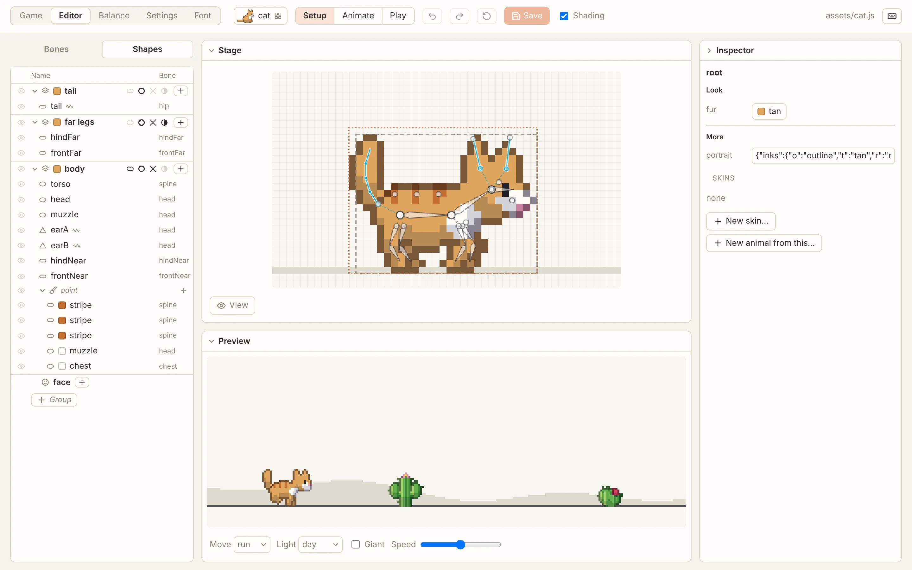

Music that follows the run
One song, played by Stardrift, a procedural chiptune engine. Every animal gets its own key, mode, pace, voices and motif. The game names a mood and the music follows: menu, exploring, tension, action, wonder at night, danger in the chase.
Add ?music to the address on a computer to watch the calls as you play.
A browser editor for the animals
Each animal is a rig of bones and shapes, with ears and tails that swing on physics. The editor has Setup, Animate and Play modes, and faces are drawn pixel by pixel. It saves back into one plain data file per animal.

// assets/cat.js, written by the editor; data only
export default {
format: 5,
name: 'cat',
fur: 'tan',
joints: { hip: [7, 12], chest: [14, 12], head: [19.5, 8.5] },
layers: [
{ name: 'tail', shapes: [{ name: 'tail',
chain: { on: 'hip', links: 4, length: 8, curl: 0.3, role: 'tail' },
along: 'capsule', r: 1.1 }] },
...